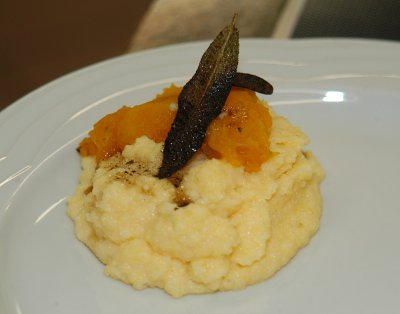

| Zutaten für 4 Personen: | |
| 1 KL | Gemüsebouillon |
| 600 g | Kürbis |
| Salz | |
| Pfeffer aus der Mühle | |
| 6 dl | Milch |
| 250 g | Maisgriess, fein |
| 1 | Knoblauchzehe |
| 1 Bund | Salbei |
| 40 g | Kochbutter |
Kürbis in Würfel schneiden.
1.5 dl Wasser mit 1 KL Gemüsebouillon in einer Pfanne zum Kochen bringen.
Die Kürbiswürfel darin zugedeckt bei mittlerer Hitze 12 Minuten kochen lassen.
Dann den Deckel wegnehmen und die restliche Flüssigkeit einkochen lassen.
Dann den Kürbis mit Salz und Pfeffer aus der Mühle würzen. Zur Seite ziehen und zudecken.
1/2 Kl Salz, 6dl Wasser, 6dl Milch in eine Pfanne geben und aufkochen.
Den Maisgriess dazu rühren.
Die Knoblauchzehe dazu pressen und gut mischen.
Die Pfanne vom Herd nehmen und zugedeckt 4 Minuten quellen lassen.
Den Salbei mit der Kochbutter in einer kleinen Bratpfanne bei mittlerer Hitze 1-2 Minuten knusprig braten.
Die fertige Polenta anrichten und die Kürbisstücke darauf verteilen. Die Salbeibutter über die Kürbisstücke tröpfeln. Die Salbeiblätter gleichmässig verteilen.
Mit frisch gemahlenem schwarzen Pfeffer bestreuen.
Kürbiskochkurs von Patricia Krummenacher am 25.9.2009.
War ganz OK. RE 25.9.2009
@LINKBACK_TAG@ @WAKELOCK@